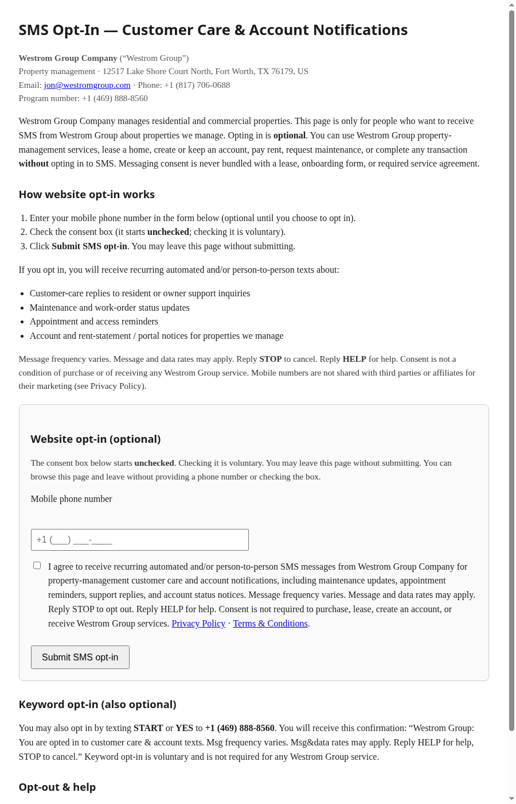

This page is published so TCR / Twilio reviewers can verify the public SMS consent Call to Action without logging in. The live opt-in form is on the public page linked below. A full-page screenshot of that form is embedded here.
https://wgcautoblog.github.io/westrom-a2p-compliance/sms-opt-in.html
Privacy Policy: privacy-policy.html
Terms & Conditions: terms-and-conditions.html
Message frequency varies. Message and data rates may apply. Reply STOP to opt out. Reply HELP for help. Consent is not required to lease, purchase, create an account, pay rent, request maintenance, or receive any Westrom Group property-management service. Mobile numbers are not shared with third parties or affiliates for their marketing (see Privacy Policy).
End users may also text START or YES to +1 (469) 888-8560 and receive: “Westrom Group: You are opted in to customer care & account texts. Msg frequency varies. Msg&data rates may apply. Reply HELP for help, STOP to cancel.”
Captured from the live Call-to-Action URL (no authentication):
